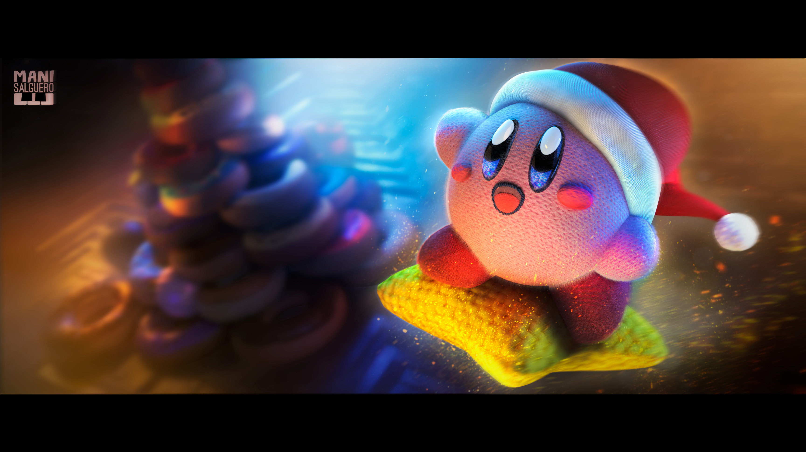
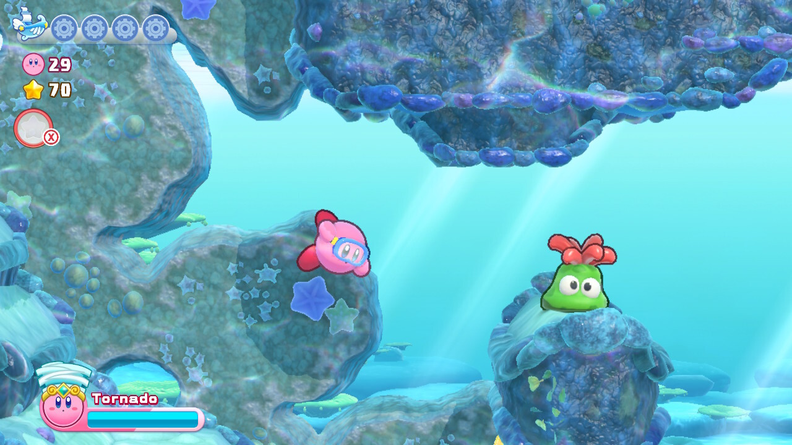

Kirby's Return to Dreamland Deluxe: análisis y reseña de una clásica aventura de Wii que llega a Switch más de 10 años después - ¿vale la pena?
En 2022 Kirby nos dejó uno de los mejores juegos familiares de 2022 con Kirby and The Forgotten Land el primer juego tridimensional de la 'bola rosa' de Nintendo. Un año después, Nintendo vuelve a confiar en este carismático personaje para protagonizar una de sus cartas fuertes para Nintendo Switch en 202. No estamos ante una aventura completamente nueva de Kirby, sino ante el regreso de un juego que no se encuentra entre los mejor calificados de la serie, pero que tampoco está entre los menos aclamados. Hablamos de Kirby's Return to Dreamland, juego que se lanzó originalmente en 2011 en Nintendo Wii y que regresa por primera vez en HD y con un buen puñado de extras que bien le hacen ganar el subtítulo Deluxe. Quédate con nosotros que aquí respondemos a la pregunta, ¿vale la pena?
Érase una vez en el planeta Pop
Era un día como cualquier otro en el planeta Pop, cuando Kirby y sus amigos ven algo cayendo del cielo. Es un barco volador que va rompiéndose en su caída y, por supuesto, acuden al lugar del accidente. Es así que se encuentran con Maglor, el misterioso tripulante que les pide ayuda para reconstruir su navío, por lo que Kirby y sus amigos emprenden una nueva aventura en búsqueda de las piezas del barco de Maglor y en la resolución de los misterios que envuelven a este misterioso personaje. Kirby's Return To Dreamland no es muy distinto a otros juegos bidimensionales de la serie. Es un plataformero en 2D en el que Kirby cuenta con la habilidad para flotar y la capacidad de absorber a sus adversarios para copiar sus poderes y usarlos a su favor como mecánica principal. Pasar el juego no es una tarea muy complicada, aunque también tienes la misión de encontrar Piezas de Energía dispersas por cada nivel y si quieres un verdadero desafío debes encontrarlas todas. Algunas de ellas están bastante ocultas y requieren de la resolución de puzzles que implican el uso de las habilidades de copia para llegar a lugares que normalmente no podrías alcanzar. Recolectar estas Piezas de Energía te permitirá desbloquear minijuegos en la nave de Maglor, así como salas de entrenamiento y retos exclusivos que ponen a prueba tus habilidades con cada transformación. Si eres de los jugadores completistas que buscan los desafíos más hardcore, te tenemos buenas noticias con estos retos de las habilidades de copia, pues no es nada sencillo conseguir todas las medallas de oro. Entre otros elementos significativos de esta entrega de Kirby bidimensional tenemos las súper habilidades de copia que, como su nombre lo indica, implicarán que Kirby tenga mucho más poder que el acostumbrado al absorber a enemigos concretos. Son tan poderosas estas habilidades que pueden romper parte de los escenarios y descubrir portales ocultos que llevan a niveles de bonificación donde puedes enfrentar a minijefes que te otorgan un par de Piezas de Energía extras. Si no te detienes mucho por los coleccionables podrías completar la campaña principal hasta en 5 o 6 horas, pero se cuenta con un modo extra que multiplica un poco la dificultad de la campaña y agrega otros cambios sorpresivos para que le des una nueva pasada al juego. También hay un modo boss-rush conocido como 'Coliseo' que se desbloquea tras ver los créditos por primera vez, así como muchas otras sorpresas de las que te hablaremos más adelante y otras que tendrás que descubrir por ti mismo cuando te des la oportunidad de jugar este título.
Una presentación adorable y ajustes sutiles más que bienvenidos
En esencia, el juego que estamos recibiendo en Nintendo Switch es el mismo que ya jugamos en 2011, aunque llega con algunos cambios más que bienvenidos para ser modernizado. En primer lugar tenemos una completa renovación visual. Mientras que el juego original apostaba por modelos tridimensionales para los protagonistas, acá tenemos modelos que, aunque tienen volumen lucen mucho más bidimensionales por el efecto de un bonito cell shading y un fuerte delineado que resalta mucho más a los personajes. Somos sinceros cuando te decimos que la nueva dirección de arte de este juego supera por mucho a la obra original. Todo el juego ha sido pulido en sus visuales, algo que se nota desde los modelados de los personajes hasta los nuevos trabajos con las texturas de los niveles y los fondos. Hay nuevos efectos visuales, mejoras de iluminación y hasta una paleta de colores con tonos mucho más vívidos. Hay animaciones completamente nuevas y detalles que se agradecen. Por ejemplo, los enemigos eliminados con las súper habilidades ahora se estampan contra la pantalla y así como este hay muchos detallitos que hacen que la presentación del juego se sienta fresca y modernizada. Más que una simple remasterización parece ser el trabajo de un remake en un juego que por primera vez podemos disfrutar en alta definición. Pero los cambios no sólo tienen que ver con los visuales y con una remasterizada a todo el apartado auditivo que también denota mejoras muy notorias, pues el juego también recibió algunos toques en su base jugable para sentirse mucho más modernizado. Los 10 años que han pasado con Kirby desde que lo viéramos en el juego original hasta el presente le sirvieron a HAL Laboratory y al estudio independiente Vanpool para que en esta nueva versión la 'Bola Rosa' y sus amigos se muevan mejor que nunca. Desde un ajuste de los controles al nadar, hasta la manera en la que se recuperan los personajes tras las caídas, la jugabilidad ha sido actualizada con los controles y movimientos de los juegos más recientes de la franquicia. También debemos mencionar que hay dos nuevas habilidades de copia que se unen a las que ya existían en el juego original. Kirby de arena y Mecha Kirby están aquí para dar una nueva dosis de frescura a la jugabilidad y también debes saber que la distribución general de las habilidades de copia y los enemigos a lo largo de los niveles ha cambiado un poco para fomentar que el jugador experimente más con diferentes maneras de pasar los niveles usando el amplio abanico de poderes que Kirby tiene a su disposición. No se trata de un juego muy difícil, pero para los jugadores más pequeños o que van comenzando en el mundo de los videojuegos, tenemos una asistencia extra que puede activarse a elección del jugador. Es posible que Maglor te acompañe en tu aventura y te rescate al menos una vez de caer al precipicio o te pase alguna bebida energética cuando estás a punto de morir. De esta manera, no hay pretexto para que nadie se quede sin jugar un juego que es completamente apto para ser el primer plataformero de cualquiera.
.jpeg)
¡Bienvenidos a Maglolandia!
Los minijuegos son parte fundamental de los juegos de Kirby, tanto así que en ocasiones Nintendo ha tomado la decisión de enfocarse en estas pequeñas experiencias –principalmente enfocadas al multijugador– para publicar spin-offs de la serie. Como podrás imaginar, los minijuegos no están ausentes de Kirby’s Return to Dreamland y desde el juego original teníamos muchos de ellos en una sala especial de la nave de Maglor, que sigue presente en el remake. Además de ello, para la versión Deluxe que ahora llega a Nintendo Switch, se ha tomado la decisión de darle estructura a este contenido adicional en un nuevo modo de juego por separado que se llama Maglolandia y que se presenta como un parque de diversiones en el que Kirby y sus amigos pueden disfrutar de la alocada diversión de los minijuegos. En este parque de atracciones tenemos un total de 10 minijuegos competitivos, la mayoría de ellos estaban en el juego de Wii, pero hay un par de nuevas propuestas que actualizan juegos del pasado o suman algo fresco al título. Por supuesto que estos juegos son mucho más divertidos si los disfrutas en compañía, pero si vas a jugar solo también puedes disfrutarlos al tener varios niveles de desafío y retadores adversarios controlados por la consola que te permitirán practicar tus mejores movimientos con los pulgares. Entre lo que más nos gustó del tratamiento que se les dio a los minijuegos para su versión de Switch es que tienen mucha flexibilidad en sus controles. Se pueden jugar con todos los botones de la consola en modo portátil, con un solo joy-con, con controles por movimiento o hasta algunos son compatibles con controles en la pantalla táctil del dispositivo que muy pocos juegos de Switch aprovechan. Es posible disfrutar cada minijuego por separado o en algo conocido como ‘Paseo por Maglolandia’ que es una sucesión de cuatro pruebas en las que el jugador con más puntos al finalizar la ronda se lleva la victoria. Si te faltan motivaciones para jugar estos minijuegos, debes saber que hay un enorme listado de misiones por completar que no son otra cosa que logros. Hay muchos de ellos que implican que juegues en solitario y logres hazañas muy específicas, pero otros de ellos se te otorgan simplemente por acumular minutos de juego en solitario o con amigos. Cada que pasas tiempo en Maglolandia recibirás como recompensa sellos que te permitirán ir completando tarjetas con premios, donde recibes consumibles que puedes llevar a la campaña principal del juego, así como máscaras con las que podrás personalizar a tu personaje cada que juegas, tanto en Maglolandia como en la campaña principal. Aunque los minijuegos sólo pueden disfrutarse en multijugador local en la misma consola, hay uno de ellos con una variante que te permite competir contra un centenar de jugadores en línea. La conexión a internet también se aprovecha para que Maglor te ofrezca estadísticas de los minijuegos a nivel mundial y una tabla de líderes, algo similar a lo que sucedió con el Waddle Dee sabio de Kirby and the Forgotten Land.
Un epílogo fantástico, pero muy breve
Finalmente, llegamos a la cereza del pastel, que es Epílogo de Maglor que se incluye como parte de los contenidos de Kirby’s Return to Dreamland Deluxe. Ojo con este modo de juego, que es una campaña por separado que se juega muy diferente al juego principal y vaya que tiene fortalezas dignas de ser reconocidas. En esta campaña adicional y exclusiva de esta versión del juego podemos jugar con Maglor tras los eventos que suceden en la campaña principal. No entraremos en detalles de lo que pasa para evitar los spoilers, pero debes saber que Maglor ha perdido sus poderes, por lo que lo acompañarás en un viaje para recuperar su magia. Aunque los movimientos de este personaje no son tan distintos a los de Kirby, la diferencia principal está en que sus habilidades mágicas son fijas –en lugar de las habilidades de copia cambiantes de Kirby– y en lugar de volar como la bola rosa que protagoniza el juego, puede planear por unos segundos antes de cansarse y caer. Para desbloquear este modo de juego es requisito pasar la campaña principal, por lo que te van a ser familiares las habilidades de Maglor que no son muy diferentes a lo que mostró cuando hizo su aparición en la historia principal. En los niveles del epílogo de Maglor te debes concentrar en la recolección de unidades de magia en forma de pequeños cristales dispersos por el escenario. Además de los cristales que recolectas directamente, tienes un contador de combo que incrementas por hacer ataques seguidos rápidamente y sin recibir daño. Cada que se rompe la cadena de combo, se te premiará con unidades de magia extras que se sumarán a tu contador. Al final del nivel, recibirás una medalla que toma en cuenta la cantidad de magia que lograste reunir. Con esto en mente, el ritmo de los niveles de Maglor es mucho más acelerado que el de los niveles de Kirby, pues concentrarte en hacer los combos –y tener en muchos casos la presión de paredes que van dictando la velocidad del desplazamiento– generan una jugabilidad muy rápida y hasta un poco frenética. Entre cada nivel es posible gastar puntos de magia para mejorar las habilidades de magia de Maglor en una hoja de desarrollo. Poder disparar más rápido, tener más alcance con los ataques, flotar por más segundos, expandir tu barra de habilidad o mejorar los súper poderes del personaje son algunos de los ejemplos de lo que puedes ir mejorando, de manera que cuando termines el juego te sentirás absolutamente poderoso con respecto a cuando iniciaste el epílogo protagonizado por este misterioso personaje. Todo lo que propone este epílogo es súper fresco y distinto a lo demás del paquete, por lo que duele que sea una aventura demasiado corta. No pasará más de un par de horas para que alcances a un jefe final que es tan difícil que casi te obligará a que regreses a rejugar los demás niveles para conseguir más puntos de magia que te permitan mejorar las habilidades de Maglor para poder superarlo, alargando así un poco la aventura de una manera un tanto artificial
.jpeg)
Entonces, ¿vale la pena?
Kirby’s Return To Dreamland no fue en su momento el juego más brillante de la serie, pero sí es una base muy buena para un paquete bastante completo que llega a Nintendo Switch en esta versión corregida y aumentada. La renovación visual del juego es tan buena como sus añadidos, donde brilla una mejor estructura para el apartado de los minijuegos con muchas tareas por completar y el fantástico epílogo de Maglor que el único pecado que tiene es ser demasiado corto. No lo mencionamos antes, pero puedes disfrutar de toda la campaña, minijuegos, modo boss-rush y hasta el epílogo en multijugador local para cuatro personas, por lo que es una buena propuesta si buscas un buen juego para compartir frente al televisor. Kirby’s Return To Dreamland Deluxe se ve mejor que nunca, se juega mejor que el título original y con todos los pequeños detalles que modernizan la experiencia nos dejan ante un buen juego para Switch y un paquete robusto pese la corta duración de muchas de sus experiencias. Quizá no es tan brillante como el juego de Kirby que se hizo desde cero y se nos entregó el año pasado, pero sí es un buen añadido a la biblioteca de Switch que podemos recomendar de cualquier forma. En efecto, vale la pena.